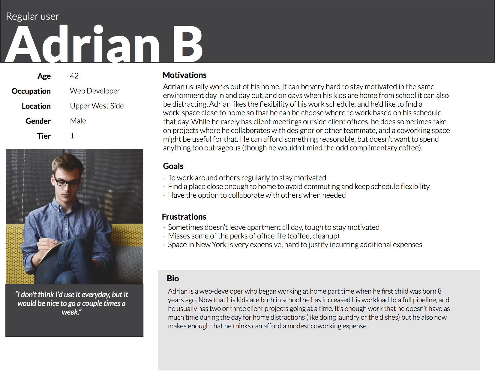
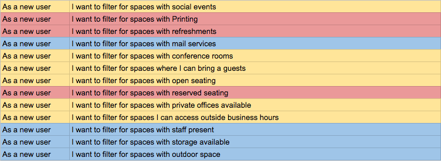
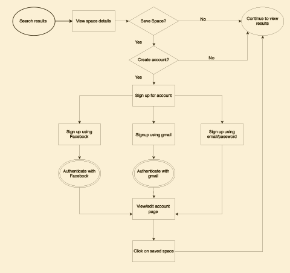
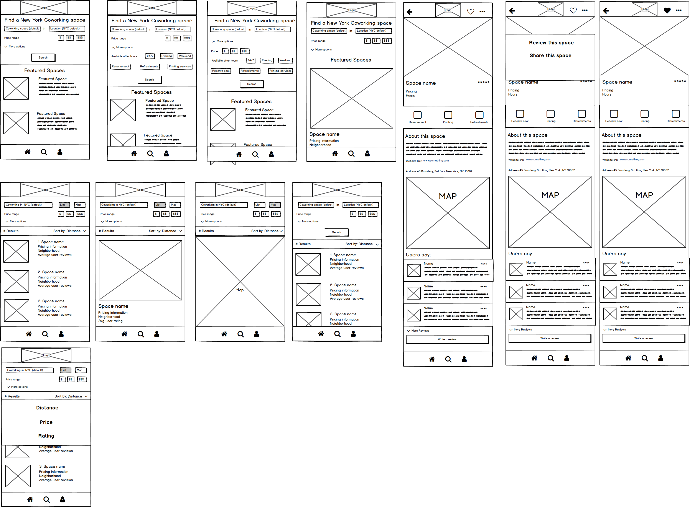
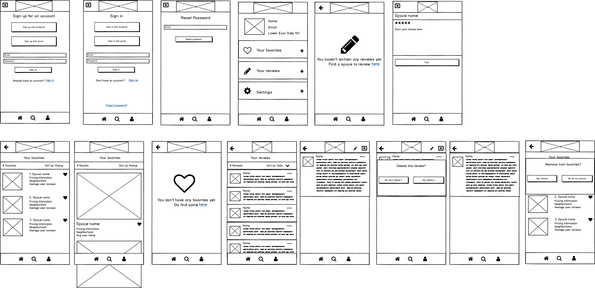

Process

Research
Market Research
The first step was to look at what coworking spaces in New York offer their users. To do this, I assessed five coworking options by price, location, and amenities. I selected a major chain/name brand site (WeWork), a smaller, lesser known chain (Spacious), and three individual sites (The Productive and The Farm in Manhattan, and Bat Haus in Brooklyn) to keep this data representative. You can see my assessment here.
To get a sense of what similar apps in other verticals prioritize, I conducted a benchmark study of Yelp, Aribnb, Seamless (a food ordering app) and StreetEasy (a New York-based real estate app).
Primary search options |
Location
|
Secondary search options |
Price
|
Filters for results |
Best match
|
Info requested for acount setup |
Username
|
*Not applicable building this app.
Survey
After conducting market research, I had enough information to build a framework for my user research. I was well versed in what features coworking spaces offered, where they were located, and the numerous pricing plans they offered, but I did not know how users prioritized these. But I still needed to understand what users wanted to know about coworking. Accordingly, I built a survey to answer the following questions:
- How interested are users in coworking, and how frequently would they utilize a coworking space?
- Which features are most important when users choose a coworking space?
- Which amenities would they most like to have in a coworking space?
- How likely would they be to use a coworking space to work with others?
Survey Results
I circulated the survey amongst a group of students and freelance/remote professionals. Results showed that 75% were interested in coworking and would ideally like to use a coworking space more than once a week.
Respondents were asked to prioritize a standardized list of coworking features and amenities based on the five coworking spaces I had assessed. Unsurprisingly, people chose pricing and location as the most important consideration when choosing a coworking space. There was a significant drop off between these two and the other choices. Ultimately, when respondents’ responses were averaged the features were prioritized as follows (in order of highest to lowest priority):
- Pricing
- Location
- Reserved seating
- User reviews
- Available amenities
- Accessibility outside business hours
More surprisingly, the most popular amenities people wanted a coworking space to have were printing and scanning services, available refreshments, and presentation and meeting rooms. The full list of amenities, in order or highest to lowest priority, was as follows:
- Printing/scanning Services
- Available refreshments
- Presentation and meeting rooms
- Space to collaborate with colleagues
- Social/community events (e.g. happy hours, networking opportunities, brown-bag lunches)
- Package and mail delivery services
Finally, while the majority expressed interest in using a coworking space to collaborate with colleagues or meet with clients, this was generally expressed as being “somewhat interested” as opposed to “very interested.”
Personas
After gathering this information from the survey respondents, I condensed the most popular responses into three personas.
User persona for minimum viable product
Adrian B. is the primary guide for the minimum viable product (MVP) of this app. He usually works autonomously, is budget conscious, and wants some of the perks of an office, but closer to home and with greater flexibility. I used Adrian’s persona to help with the prioritization of user stories and flows in the next section
Information Architecture
User Stories
The initial list of User Stories took into account all my findings from my primary and secondary research.
I used the survey results to prioritize features for the initial MVP. In the example below, I prioritized filters that users should have to narrow their search results. The items highlighted in red are the most critical, and were included in this MVP. Yellow highlighted items are secondary features, and the blue are the least critical.
Prioritized user stories.
I prioritized the two most popular amenities, printing services and available beverages, and grouped them with reserved seating for the initial amenities. I chose to move reserved seating from a feature to an amenity to condense the number of filters in the search functionality of the app, and because on further review it seemed to fit better with amenities. The other features have a universal aspect (hours, pricing, location) that could easily be found in any industry, but reserve seating is more specific, and in hindsight fit better with amenities.
Accessibility outside business hours: while this scored relatively low overall on features, I opted to keep in the MVP for three reasons:
- A significant minority ranked it as their number 1 consideration (around 10% of respondents).
- My benchmark study of apps in other verticals indicated hours of operation is a standard feature, leading to the concern users would expect to see it.
- Research into the freelance/independent workforce indicated that many work irregular hours or are freelancing part-time/on top of daytime commitments. This lead me to conclude that despite the survey results a significant number of users might find this an important consideration.
User Flows
After creating the user stories it was time to map out the user flows:
Flow demonstrating what would happen to a new user (with no account) searching and saving coworking spaces.
It was important to me that users who don't initially create an account would still be able to search and filter for coworking spaces. The benefits of having an account are being able to save your favorite spaces and review the ones you have visited. However, given the newness of the app concept I wanted to account for the fact that users may want to explore the app and its features before signing up, and allow them to do so, rather than lose them at the onboarding.
Wireframes
Once my user flows were finalized, it was time to begin visualizing my app. I sketched out wireframes of each of the pages in Balsamiq, and once that was completed I made a quick prototype in InVision to spot-check I hadn’t left out any crucial steps or images.
Initial wireframes for the page, search results, filters, etc.
Initial wireframes for the account page setup and editing